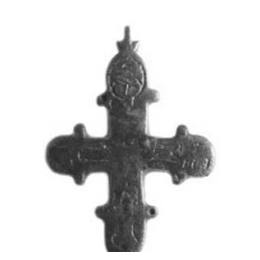

Catalog › CE-0200 · VSM2013-5
Valvă de encolpion din aramă, cat. 5, Muzeul Vladimir–Suzdal
sec. XII (1101–1200) · Vladimir, str. Volodarskogo 10, Rusia · Muzeul-rezervație de stat Vladimir–Suzdal (Владимиро-Суздальский музей-заповедник), Rusia, inv. В-54478/30. АВ-1986
single valve of a reliquary cross, aramă; c. XII (1101–1200); found at Vladimir, str. Volodarskogo 10, Rusia; kept at Muzeul-rezervație de stat Vladimir–Suzdal (Владимиро-Суздальский музей-заповедник), Rusia.


Identificare
- Categorie
- Valvă izolată
- Material
- Aramă
- Tehnică
- Turnare în relief
- Stare
- Fragmentară
- Dimensiuni
- Î 68 × L 45 × Gr 3 mm
Iconografie
- Descriere avers
- Contururile imaginilor sunt marcate prin adâncituri pentru niello; în centru Hristos răstignit; imaginile de la capetele brațelor de sus și laterale nu se pot citi.
Datare și atribuire
- Datare
- sec. XII (1101–1200)
- Centru
- Necunoscut
- Tipologie
- grupa „cu niello”, după Kokorina
Descoperire
- Localitate
- Vladimir, str. Volodarskogo 10
- Țară
- Rusia
- Context
- Așezare
- Anul
- 2000
- Coordonate
- 56.1289° N, 40.4075° E
- Precizia locului
- Doar localitatea
Păstrare și referințe
- Colecție
- Muzeul-rezervație de stat Vladimir–Suzdal (Владимиро-Суздальский музей-заповедник), Rusia
- Nr. inventar
- В-54478/30. АВ-1986
- Bibliografie
- Н. А. Кокорина (сост.), Нагрудные кресты древнерусского времени из археологических коллекций Государственного Владимиро-Суздальского музея-заповедника, Vladimir, 2013, 76 p. [Kokorina 2013], p. 20, cat. nr. 5, cu fotografia reprodusă pe aceeași pagină. PDF liber pe site-ul muzeului: https://vladmuseum.ru/upload/iblock/787/69. Нагрудные кресты древнерусского времени из археологических коллекций ГВСМЗ.pdf (accesat 17.10.2026); text și pe azbyka.ru.
- Figura
- Kokorina 2013, ilustrația de la cat. 5
- Planșe
- Kokorina 2013, p. 20
- Observații
- Datare după Kokorina: sec. XII. Descoperire în 2000, săpături: Jarnov Iu. E. Fragment: valva din spate lipsește; adânciturile nu mai conțin niello. Coordonate: ale localității (aproximative), nu date în sursă.
Citare: Corpus Encolpiorum, CE-0200, Valvă de encolpion din aramă, cat. 5, Muzeul Vladimir–Suzdal, --root/piese/VSM2013-5/ (accesat 2026-10-17).